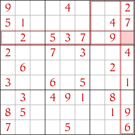
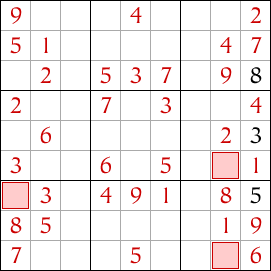

Sudoku facile pour les débutants avec techniques et conseils
The most common technique to solve an easy Sudoku is the Open Single technique. If you're new to sudoku, take a look at this technique below. You’ll need to master it before moving on to more difficult puzzles.
Open Single (A technique for beginners)
Sometimes there's a square in the sudoku where only one number is allowed. Consider the highlighted cell in this sudoku grid below; what numbers could it contain? Under the rules of sudoku, no row, column or block may contain the same number twice.
The block containing the highlighted cell already contains the numbers 2, 4, 7 and 9 so none of these numbers are allowed in the cell. Similarly, the column containing the cell contains the numbers 1, 2, 4, 6, 7 and 9 so these numbers aren't allowed either, and the row containing the cell has the numbers 2, 3, 5, 7 and 9 so these numbers are also banned from the cell.
With all these banned numbers, there's only one number that is allowed in the cell and that's the number 8. So we can place an 8 in the cell. This is the open single.
Now look further down the same column to the cell highlighted in the next image. What numbers could this cell contain? Look at the box, row and column containing this cell and you'll notice that the numbers 1, 2, 3, 4, 6, 7, 8, and 9 are all banned. So the only number allowed in this cell is 5.

Having placed the 5, there's only one cell left in this column, so that's easy - it must be a 3 because that is the only number not yet used in the column.
Looking around the cells in this sudoku, you'll find more open singles in the cells highlighted, and after you've completed these cells more open singles will become available.
This is a fairly easy sudoku and can be completed using only the open single technique, although sometimes the open singles may be hard to find.